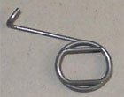
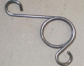
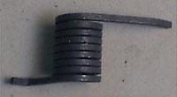

AMS fabrique différents types de ressorts de torsion :
Ressorts de torsion avec du fil rond
Ressorts avec diamètres de fil variant de 0.3 mm à 4 mm.
Nuances de fil utilisées pour la fabrication de ce type de ressort : Acier SH, SM sans traitement de surface ou avec traitement de surface (galvanisé, bondérisé, etc…), inox alimentaire.
Une stabilisation après fabrication est nécessaire afin que le ressort trouve ses caractéristiques mécaniques définitives.
|  |  | |||
Ressort de torsion avec carré d'entrainement |
Ressort de torsion fil SH avec 2 boucles d'entrainement |
Ressort de torsion fil inox avec 2 boucles d'entrainement |
Ressort de torsion fil SH double corps |
Ressort de torsion avec corps 6 spires |
Ressorts de torsion avec du fil de section carrée
Ressorts avec fil carré variant de 1.0 mm a 3.5 mm de section.
Nuances de fil pour ces ressorts : Acier SH, SM sans traitement de surface ou avec traitement de surface (galvanisé, bondérisé, etc…), inox alimentaire.
Une stabilisation après fabrication est nécessaire pour que le ressort trouve ses caractéristiques mécaniques définitives.
|  | |
Ressort de torsion fil carré inox |
Ressort de torsion fil carré SH avec protection anti-bruit |
Voir aussi : Ressort de torsion avec du fil plat laminé